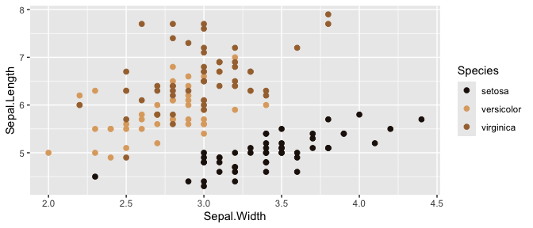
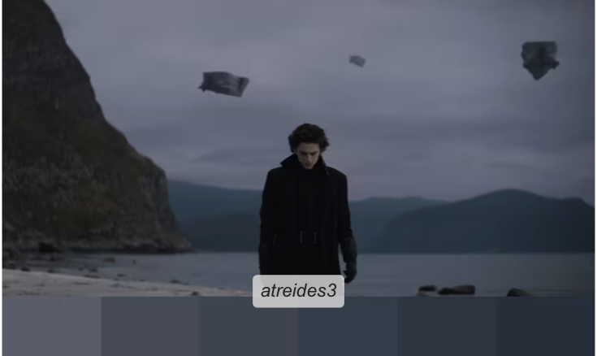
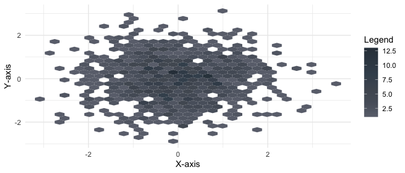

The {Rdune} package offers a collection of color palettes inspired by ‘Dune’, designed for use in data visualizations and graphics with {ggplot2}.
The structure of the code and creative inspiration were drawn from the {PrettyCols}, {wesanderson}, {MetBrewer}, {PNWColors} packages.
Colors were selected using {eyedroppeR}.
See https://nvietto.github.io/Rdune/ for full documentation.
Installation
{Rdune} is available on CRAN. Install using:
install.packages("Rdune")Or you can install the development version of Rdune from GitHub with:
# install.packages("devtools")
devtools::install_github("nvietto/Rdune")How to use
library(Rdune)
# See all palettes
names(dune_palettes)
#> [1] "arrakis" "atreides"
#> [3] "atreides2" "atreides3"
#> [5] "atreides4" "bene_gesserit"
#> [7] "corrino" "fermen"
#> [9] "fermen2" "harkonnen"
#> [11] "harkonnen2" "harkonnen3"
#> [13] "harkonnen4" "maythyknifechipandshatter"
#> [15] "sandworm"Examples
“May thy knife chip and shatter”

library(ggplot2)
ggplot(
data = iris,
mapping = aes(x = Sepal.Width, y = Sepal.Length, color = Species)
) +
geom_point(size = 2) +
scale_color_dune_d(name = "maythyknifechipandshatter")
House Atreides

library(ggplot2)
ggplot(
data.frame(x = rnorm(1000), y = rnorm(1000)),
aes(x = x, y = y)
) +
geom_hex() +
theme_minimal() +
scale_fill_dune_c(name = "atreides3") +
labs(x = "X-axis", y = "Y-axis", fill = "Legend")